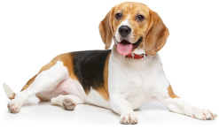
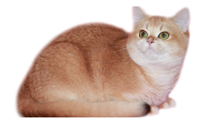
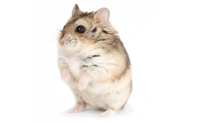
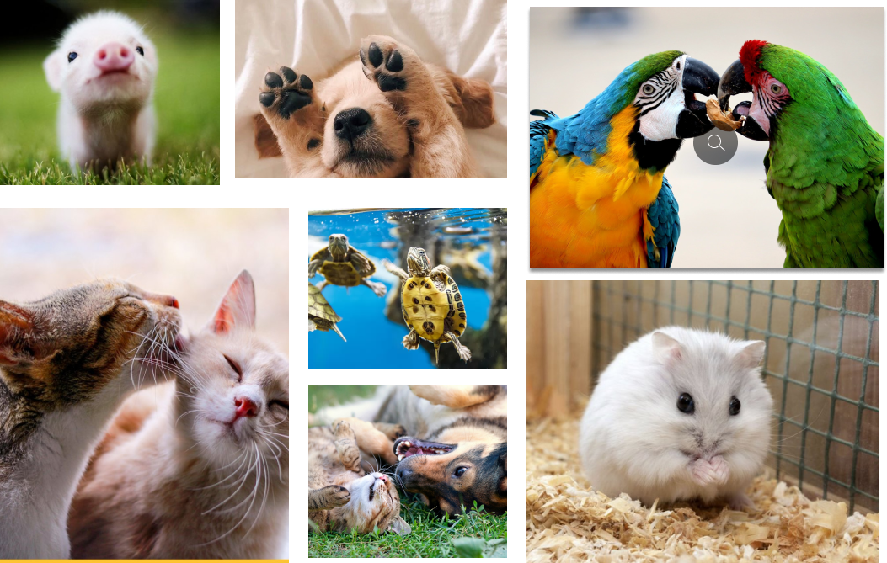

Чому обирають нашу клініку?
Досвід
Наша ветеринарна клініка має багаторічний досвід у наданні високоякісної медичної допомоги тваринам.
Сучасні методи
Наша ветеринарна клініка використовує передові сучасні методи та технології для надання найкращої медичної допомоги вашим улюбленцям. Ми постійно вдосконалюємося та впроваджуємо нові методики, щоб забезпечити найвищий рівень діагностики, лікування та догляду.
Любов
У нашій ветеринарній клініці любов до тварин лежить в самому її серці. Ми віддані та пристрасні в своїй роботі, і кожен член нашої команди має глибоке розуміння та любов до тварин.
Наші послуги
- Усі
- Собаки
- Кішки
- Попуги
- Хомяки
Консультація ветеринара
Консультація власникам тварин щодо загального здоров'я тварини, профілактики хвороб, харчування, вакцинації та інших питань.
Від 150 грн.
Лікування та терапія
Ветеринари можуть призначати ліки, ін'єкції, фізіотерапевтичні процедури та інші методи лікування для поліпшення здоров'я тварин.
Від 350 грн.
Стоматологічна догляд
Послуги стоматологічного догляду, включаючи чищення зубів, лікування захворювань ясен та видалення зубів.
Від 750 грн.
💚 Ми любимо лікувати 💚
Про нашу клініку
Ветеринарна клініка "Happy Pet" - це сучасний медичний заклад, спеціалізований у наданні високоякісної ветеринарної допомоги для тварин. Ми працюємо з метою забезпечити оптимальне здоров'я і щасливе життя вашого улюбленця.
У нашій клініці працюють досвідчені та професійні ветеринари, які мають глибокі знання і навички у всіх аспектах ветеринарної медицини. Ми прагнемо стежити за останніми тенденціями у сфері ветеринарної медицини та використовувати сучасні методи діагностики та лікування.
Наша команда зосереджена на наданні індивідуального та розуміючого підходу до кожного пацієнта. Ми розуміємо, що ваші тварини - це члени сім'ї, і ми прагнемо забезпечити їм найкращу можливу допомогу та комфорт під час кожного візиту.

Відгуки про нашу клініку
" Я повністю задоволений роботою ветеринарної клініки. Їх професіоналізм і турбота про тварин дійсно вражають. Ветеринари завжди готові надати вичерпну інформацію і радити щодо будь-яких питань щодо здоров'я моєї собаки. Рекомендую їх послуги всім власникам домашніх улюбленців " - Майкл Клот
" На мою думку, це найкраща ветеринарна клініка в місті. Їх висококваліфіковані ветеринари завжди знаходять рішення для будь-яких проблем з моїми тваринами. Клініка добре обладнана сучасними засобами діагностики, що дозволяє точно встановлювати діагнози. Я дуже вдячна їм за догляд, яким вони оточують моїх улюбленців " - Дарина Колоптенко

" Останнім часом я звертаюся до цієї ветеринарної клініки із своїми проблемами з котом, і я повністю задоволена їхнім сервісом. Персонал завжди привітний і ввічливий, а ветеринари проявляють індивідуальний підхід до тварин. Вони докладають усіх зусиль, щоб зрозуміти проблему і забезпечити ефективне лікування. Я рекомендую цю клініку всім, хто шукає якісну ветеринарну допомогу " - Єва Шипта
" Я багато років ходжу до цієї ветеринарної клініки зі своїми котами, і завжди залишаюся задоволеною. Їхні ветеринари виявляють велику кількість знань і досвіду, і завжди готові надати поради з питань профілактики і лікування. Персонал дуже привітний, атмосфера в клініці зручна і спокійна. Я рекомендую цю клініку всім власникам домашніх тварин " - Денис Водивко